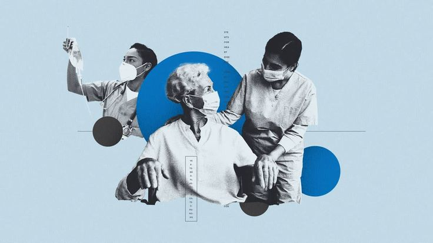
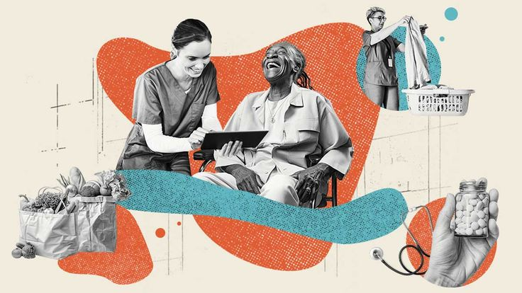
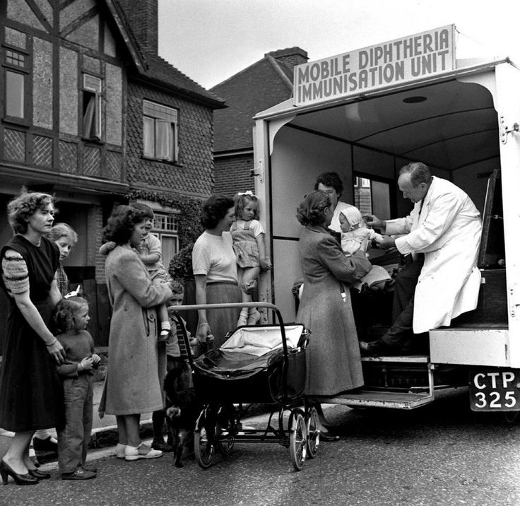
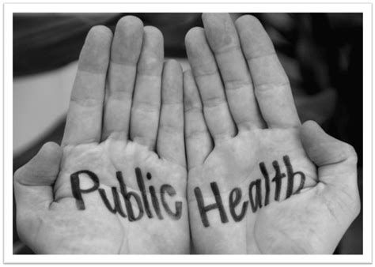
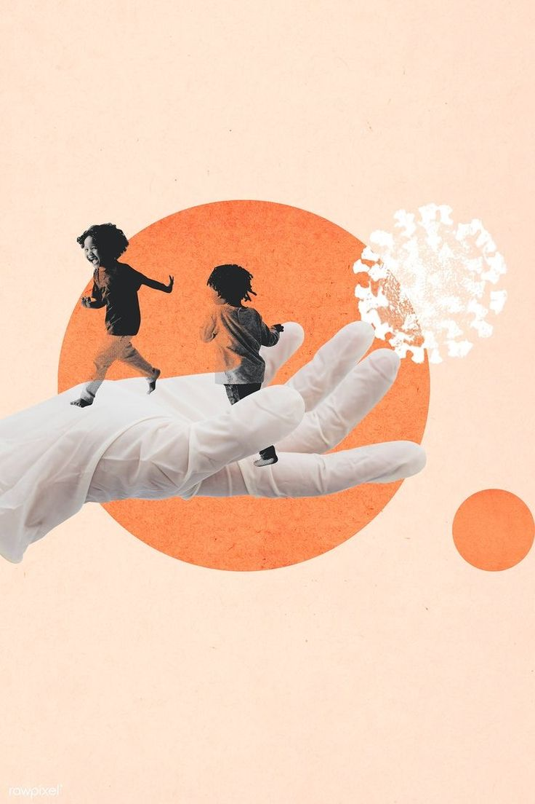
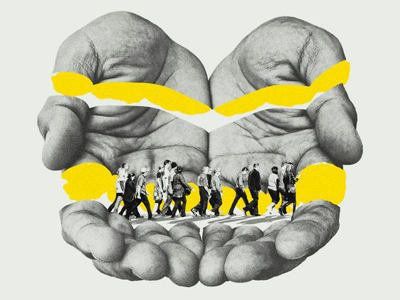
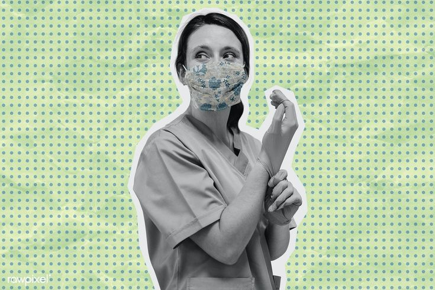
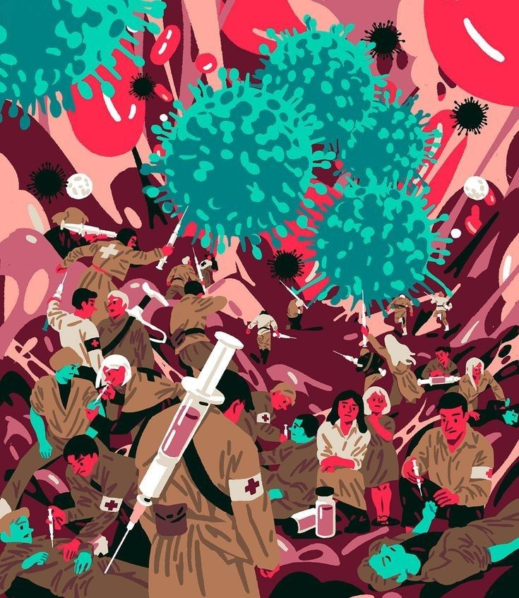

S A L U D P U B L I C A

La salud pública es una disciplina que se enfoca en la prevención de enfermedades, la promoción de la salud y el bienestar de las comunidades. Se basa en la investigación científica, la educación y la implementación de políticas para mejorar la calidad de vida de las personas.







La salud es el estado más preciado que podemos poseer. A través de nuestros servicios de educación, prevención y promoción de la salud, buscamos construir comunidades más saludables y resilientes. Cada paso que damos en prevención es un paso hacia un futuro más saludable para todos. La salud pública no es solo responsabilidad del gobierno, es un compromiso colectivo de toda la sociedad.
A través de los siglos, la salud pública ha sido fundamental en el progreso de la humanidad. Conoce los hitos más importantes:

Una de las primeras iniciativas globales de salud pública. La Real Expedición Marítima de la Vacuna fue una campaña organizada por el médico español Francisco Javier Balmis para llevar la vacuna contra la viruela a todo el Imperio Español y sus colonias, salvando millones de vidas.
Durante el siglo XX, la salud pública se institucionalizó a nivel mundial. Se crearon organismos internacionales como la OMS (1948) y se desarrollaron políticas públicas coordinadas para combatir enfermedades endémicas, mejorar la higiene y crear sistemas de salud nacionales que beneficiaran a toda la población.

La salud pública ha demostrado su importancia vital durante las grandes pandemias. Desde la gripe española de 1918 hasta la COVID-19, las estrategias de salud pública de prevención, vigilancia epidemiológica y educación sanitaria han sido cruciales para proteger a la población mundial y minimizar el impacto de estas crisis de salud.